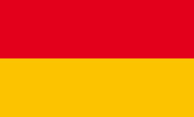
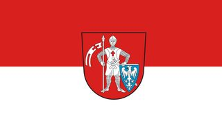
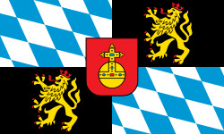
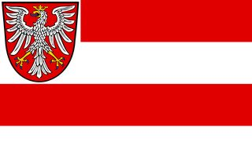
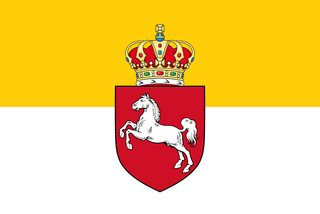
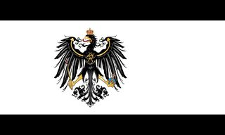
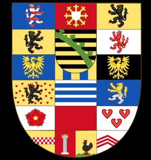

Baden
Bamberga (Diocesi)
Baviera (Elettorato) Baviera (Regno)
Francoforte Amburgo
Hannover (Regno) Assia-Cassel Assia-Darmstadt Mecklenburgo-Schwerin
Mecklenburgo-Strelitz
Nassau (Ducato)
Mecklenburgo-Schwerin
Mecklenburgo-Strelitz
Nassau (Ducato)

Prussia (Regno) Reuss-Greiz Reuss-Schleiz Sassonia-Altenburg Sassonia-Coburg & Gotha
Sassonia-Coburg-Saalfeld Sassonia-Hildburghausen Sassonia-Meiningen Sassonia-Weimar-Eisenach Sassonia (Elettorato) Sassonia (Regno) Schwarzburg-Rudolstadt Westphalia Wurttemberg